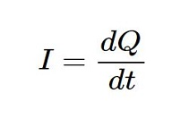
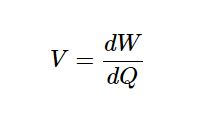
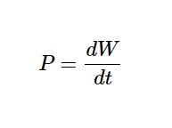
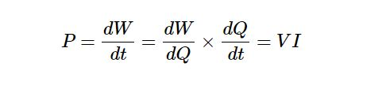

The basic learning begins.
Network theory is the study of solving the problems of electric circuits or electric networks. In this introductory chapter, let us first discuss the basic terminology of electric circuits and the types of network elements.
In Network Theory, we will frequently come across the following terms −
So, it is imperative that we gather some basic knowledge on these terms before proceeding further. Let’s start with Electric Circuit.
An electric circuit contains a closed path for providing a flow of electrons from a voltage source or current source. The elements present in an electric circuit will be in series connection, parallel connection, or in any combination of series and parallel connections.
An electric network need not contain a closed path for providing a flow of electrons from a voltage source or current source. Hence, we can conclude that "all electric circuits are electric networks" but the converse need not be true.
The current "I" flowing through a conductor is nothing but the time rate of flow of charge. Mathematically, it can be written as
Where,
Q is the charge and its unit is Coloumb.
t is the time and its unit is second.
As an analogy, electric current can be thought of as the flow of water through a pipe. Current is measured in terms of Ampere.
In general, Electron current flows from negative terminal of source to positive terminal, whereas, Conventional current flows from positive terminal of source to negative terminal.
Electron current is obtained due to the movement of free electrons, whereas, Conventional current is obtained due to the movement of free positive charges. Both of these are called as electric current.
The voltage "V" is nothing but an electromotive force that causes the charge (electrons) to flow. Mathematically, it can be written as
Where,
W is the potential energy and its unit is Joule.
Q is the charge and its unit is Coloumb.
As an analogy, Voltage can be thought of as the pressure of water that causes the water to flow through a pipe. It is measured in terms of Volt.
The power "P" is nothing but the time rate of flow of electrical energy. Mathematically, it can be written as
Where,
W is the electrical energy and it is measured in terms of Joule.
t is the time and it is measured in seconds.
We can re-write the above equation a
Therefore, power is nothing but the product of voltage V and current I. Its unit is Watt.
We can classify the Network elements into various types based on some parameters. Following are the types of Network elements −
Active Elements and Passive Elements
Linear Elements and Non-linear Elements
Bilateral Elements and Unilateral Elements
We can classify the Network elements into either active or passive based on the ability of delivering power.
Active Elements deliver power to other elements, which are present in an electric circuit. Sometimes, they may absorb the power like passive elements. That means active elements have the capability of both delivering and absorbing power. Examples: Voltage sources and current sources.
Passive Elements can’t deliver power (energy) to other elements, however they can absorb power. That means these elements either dissipate power in the form of heat or store energy in the form of either magnetic field or electric field. Examples: Resistors, Inductors, and capacitors.
We can classify the network elements as linear or non-linear based on their characteristic to obey the property of linearity.
Linear Elements are the elements that show a linear relationship between voltage and current. Examples: Resistors, Inductors, and capacitors.
Non-Linear Elements are those that do not show a linear relation between voltage and current. Examples: Voltage sources and current sources.
Network elements can also be classified as either bilateral or unilateral based on the direction of current flows through the network elements.
Bilateral Elements are the elements that allow the current in both directions and offer the same impedance in either direction of current flow. Examples: Resistors, Inductors and capacitors.
The concept of Bilateral elements is illustrated in the following figures.

In the above figure, the current (I) is flowing from terminals A to B through a passive element having impedance of Z Ω. It is the ratio of voltage (V) across that element between terminals A & B and current (I).

In the above figure, the current (I) is flowing from terminals B to A through a passive element having impedance of Z Ω. That means the current (–I) is flowing from terminals A to B. In this case too, we will get the same impedance value, since both the current and voltage having negative signs with respect to terminals A & B.
Unilateral Elements are those that allow the current in only one direction. Hence, they offer different impedances in both directions.